Wall boxes for electrical accessories
Wall boxes are, surprisingly, one of the components in an electrical installation that are the most standardised. Generally speaking, they can be grouped into either European-based designs (round or square) or American-based ones (rectangular), although there are exceptions, such as in Denmark and South Africa.
They can be of a few different types, depending on the kind of environment they're meant to be used in: masonry boxes are installed, along with conduit, by cutting a hole in the wall of the building ("chasing") and securing it with plaster; drywall boxes usually have push-out levers to hold onto the drywall; surface-mount boxes are made out of stronger materials to withstand impacts, and are usually found in places where installing one in the wall may be undesirable.
Aside from normal wall boxes, there are also electrical accessories designed for being surface-mounted, especially common in Europe. These may be more desirable due to their smaller size and higher resistance to impacts.
Old-style European wall boxes
Traditionally, wall boxes used in Europe were round, with a diameter of 65mm (though this can vary between countries) and without any screws. Devices had two sharp metal pieces ("claws") on the side, which would bite into the side of the box once the screws were fully tightened, securing the device in place.
This method of installation was common for decades, however it had the disadvantage of the device potentially coming loose over time, especially power sockets (which have to deal with the constant mechanical stress of plugging and unplugging appliances). As such, they were later improved, adding screws and wider variants.
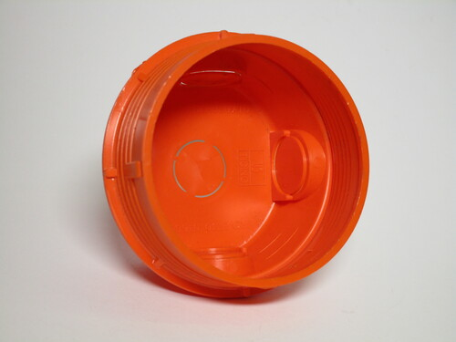 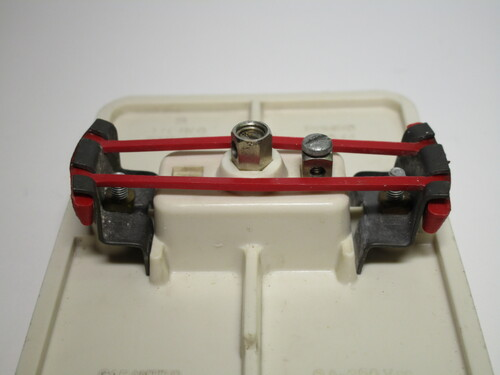{kind=link}
{kind=link}

Modern European (German-style) wall boxes
The standard wall boxes used in most of Europe these days are based on the old round ones, but with mounting screws on the top and bottom (or on the sides).
For decades, electrical accessories have supported both old and new styles of boxes, being supplied both with claws and screw holes. Only recently have some (generally, high-end) ones started dropping claws on their devices.
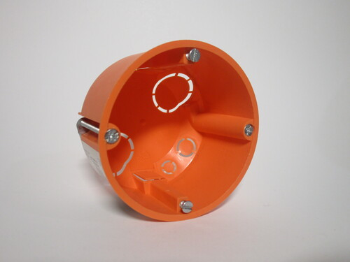{kind=link}


Larger sizes of boxes are, of course, available. These work by having devices mount using screws, as normal, with a single wide faceplate being added on top. Unfortunately, in most cases the faceplate sizes aren't standardised, so all devices have to be from the same manufacturer and product line (series).
The advantage of having boxes have the same size on both axes is that they can be set up horizontally or vertically, without having the device rotated in the "wrong" direction. This can be very useful and is often seen in electric insallations: for example, a bank of sockets for a kitchen will likely be horizontal, while it may be more desirable to have light switches next to a door mounted vertically.
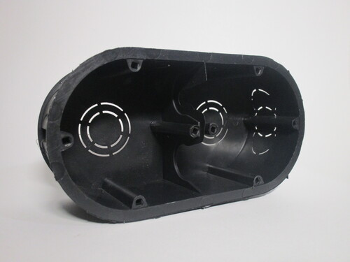{kind=link}


French wall boxes
Wall boxes used in France are essentially identical to their German counterparts, but with a crucial difference: the centers of larger boxes (anything aside from 1-gang ones) are closer together, making them incompatible.
Another interesting difference is that these larger boxes have an interior divider between each "section" that can be removed; this is required by certain electrical accessories, such as modular series somewhat similar to Italian ones, though they're not very common.
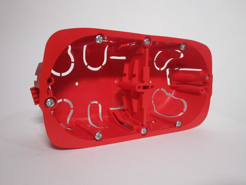{kind=link}


British wall boxes
While also based on a similar core design, British wall boxes have several fundamental differences from standard European ones. Only two sizes are commonly found (other ones are available but very uncommon in homes), a 1-gang box and a 2-gang one. As indicated by their name, the former can hold one power socket while the latter can hold two.
1-gang boxes are typically used for light switches (between one and three), dimmers and isolator switches. Single sockets are also frequently installed, though not as common as double ones. When used with switches, very thin boxes are often used, especially in cheaply-built houses; this leads to the mechanism having to be a lot thinner than in other countries.
Electrical accessories in the UK aren't modular, instead being comprised entirely of a single block with screw holes on the front - rather than behind a faceplate - for mounting (though higher-end devices are available with a separate cover plate). Because of this, one of the mounting posts inside the box can be moved up and down slightly, to make the device perfectly level, as making the front holes wider would be a problem aesthetically.


2-gang boxes are generally used with power sockets: a double switched outlet is the most common style seen in the UK and Ireland. Other devices are also available, for example an isolator switch with a single socket (useful in kitchens) or a combined light switch and dimmer.
However, 1-gang items are entirely incompatible with 2-gang boxes and viceversa, which can limit flexibility; for this reason, boxes with two 1-gang sections spaced apart also exist.
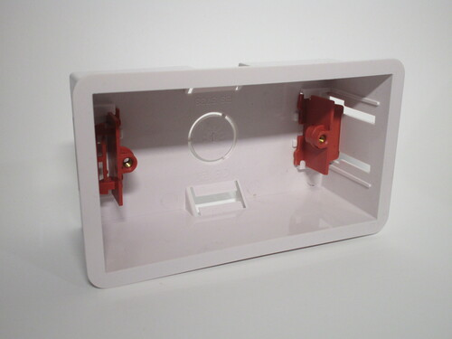{kind=link}


American wall boxes
American wall boxes are rectangular, almost always mounted vertically, with screw holes on the top and bottom to hold the device. On metal boxes (typically for surface mounting) these also provide an earth connection to the box, though a terminal is also present to connect a separate earthing wire.
Generally, it's common for wall boxes to be built out of plastic and meant for drywall - the most popular type of construction for houses in the continent. They're mounted before the drywall is actually installed, by being nailed directly to a wooden stud. There are also models available for retrofitting existing installations which work by holding directly to the drywall, similarly to designs used in other parts of the world.
This style has been very influential worldwide: aside from North America, similar models have also been adopted in Brazil, Japan, South Korea, Thailand, along others.
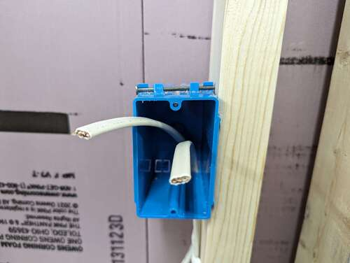 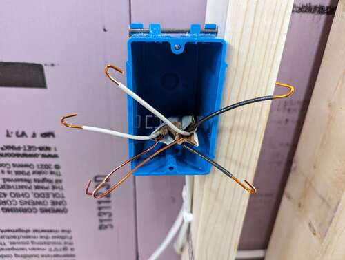 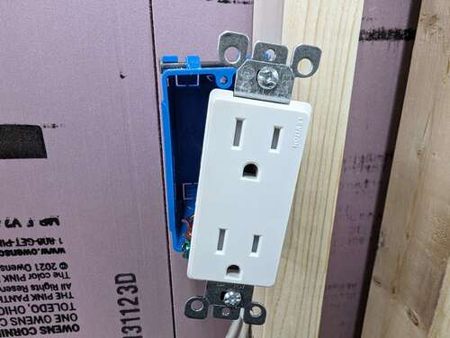{kind=link}
{kind=link}
{kind=link}
Larger box sizes are available: these are wider, with multiple screw posts for individual devices; after everything has been installed, a singular faceplate is screwed on top. Their types are standardised (these days the Decora one is the most common), so items from different manufacturers can be used together.
For surface mounting, special metal boxes are used, which are able to withstand tougher conditions.
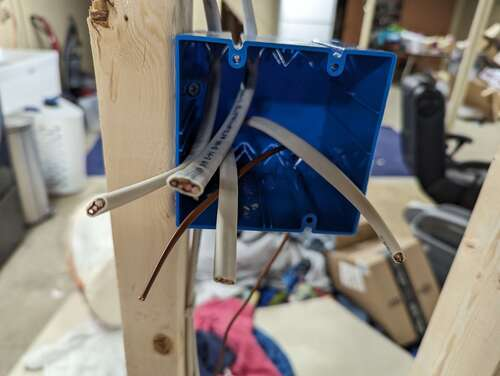 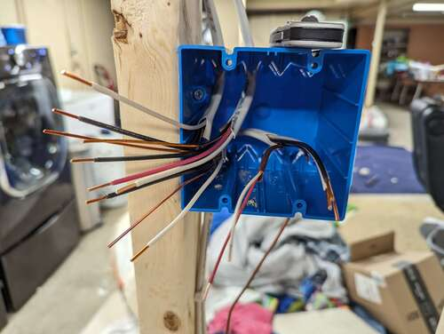 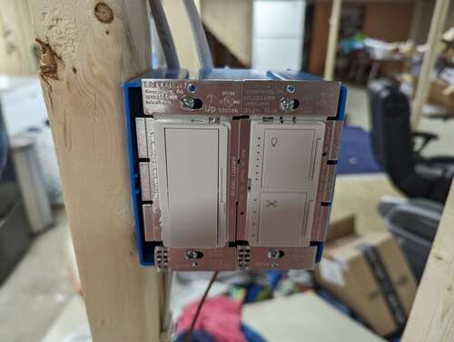{kind=link}
{kind=link}
{kind=link}
Italian wall boxes
Traditional Italian wall boxes were of the screwless round style, and can still be found in old homes. However, rather than moving to the later version with screws, as did the rest of Europe, Italy instead switched standard entirely, adopting one based on the American rectangular design.
These modern wall boxes were introduced by BTicino alongside the modular Magic series, and are designed with modular items in mind. The most common box size, the 503, is identical to the American one (just placed horizontally) and can hold three modules. The 504 box can hold four modules, and is very useful to install two Schuko power sockets together. The 506 one originally only held 6 modules, but later series upgraded it to 7 instead. Other sizes exist but are uncommon.
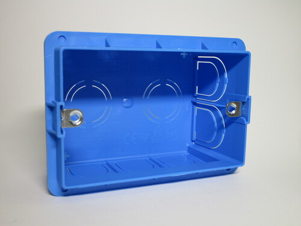{kind=link}


Modern installations adopt all of these box types, depending on the context: plain outlets may use a classic 503 box, but for kitchens, living rooms and other areas with lots of appliances a 506 one (or many 504 ones) are preferred.
It's likely that, as Schuko sockets become more common, "traditional" 503 boxes (which can only hold one) will likely get less popular in favour of 504 ones, which take up barely any extra space.
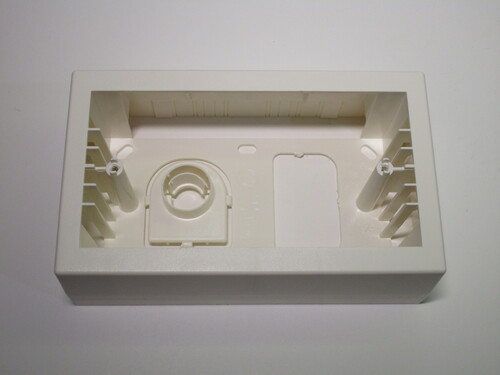{kind=link}


Blanking plates
Blanking plates are used when normal wall boxes are used as junction boxes, rather than ones specifically meant for that purpose, or when a box isn't currently in use for anything, either because a device has been removed or simply for futureproofing.
These are extremely simple, consisting just of a piece of plastic with screw holes. More expensive models are also available, which hide the screws under a cover for aesthetic reasons.
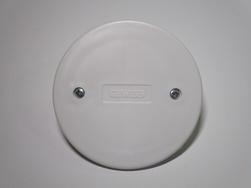{kind=link}
{kind=link}
{kind=link}
{kind=link}
{kind=link}